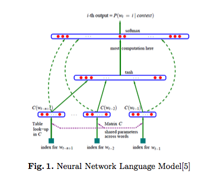

Word Vector Modeling for Sentiment Analysis of Product Reviews
Task
This task aims to evaluate the deep learning techniques for sentiment classification. The data set are collected from both Chinese and English Amazon product review web site, and deep learning technology is required to use in the classify process.
Problem
The state-of-the-art word vector method still can’t distinguish the important sentiment information explicitly. For example, the model can learn out the information that “good” and “well” have the similar meaning, but it can’t grasp the information that the both of the two words have strong positive affectivity. Thus, how to mine the semantic and sentiment information in product reviews is the key point in this task.
Main Work
This work proposes a word vector neural network model, which introduces label information into the unsupervised neural network language model, so that the sentiment orientation and topical semantic information are both learned.
We also accelerate our neural network language model. The experiments on the NLPCC2014 emotional evaluation dataset show the effectiveness of our model.

Conclusion
- Proposed a word vector learning method aiming at sentiment analysis and explores the performance of deep learning models on the task of sentiment classification for product reviews.
- Acquired the best F1 score in the Competition of NLPCC2014
- Published Paper in NLPCC2014: Word Vector Modeling for Sentiment Analysis of Product Reviews (EI)
My work
- Surveyed Word Vector Modeling method and analysis statistical attributes over Amazon Product Review Dataset
- Improved Word2Vec code by adding positive/negative label which represents words’ sentiment information on product reviews in training phase
- Implemented the experiments and wrote parts of this paper
Date
Paper